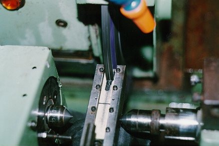
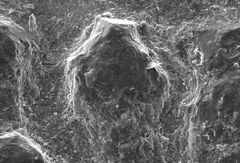

LMP>Research Guidelines>GENDEF>Retificação com Superabrasivos em Máquinas-Ferramentas Convencionais
OBJECTIVESEste trabalho tem por objetivo estudar a performance de rebolos de nitreto de boro cúbico (CBN) em retificadoras convencionais adaptadas para velocidades periféricas de até 50 m/s. INTRODUCTIONO CBN é um material superabrasivo com dureza próxima à do diamante e não reativo ao carbono (indicado para a usinagem de metais ferrosos). A retificação com rebolos de CBN vem ganhando destaque na indústria devido à elevada qualidade e precisão dimensional do produto, além da alta produtividade obtida. Contudo estes resultados somente têm sido viabilizados pela utilização de máquinas de alta tecnologia. Deste modo torna-se necessário pesquisar a aplicabilidade do CBN em retificadoras convencionais, minimizando assim o custo de sua implantação na indústria. PROCEDURESSão utilizadas duas retificadoras nas quais foram instalados conversores
de frequência que alimentam os motores (AC) proporcionando velocidades
de corte de até 50 m/s. A figura 1 mostra a operação de afiação do rebolo
de CBN sendo realizada por um dispositivo hidro-pneumático projetado
e construído no laboratório. O dispositivo se resume a um sistema
híbrido de avanço com força e velocidade constantes. O projeto trata atualmente de duas frentes de pesquisa na linha de retificação por mergulho: os desgastes de quina e frontal da ferramenta. RESULTSOs resultados têm se apresentado satisfatórios tanto em relação à capacidade das máquinas-ferramentas (rigidez, potência e precisão) quanto ao emprego do dispositivo de afiação, dos rolos dressadores e do sistema de impressão por resina. Os resultados obtidos de rugosidade apontam para a necessidade de um bom nível de controle sobre as variáveis de entrada seja para o dressamento ou para o processo de retificação em si.   |
| Contact: GENDEF Walter Lindolfo Weingaertner Prof. Dr.-Ing |
Last update 21.06.2006 |
{kind=link}